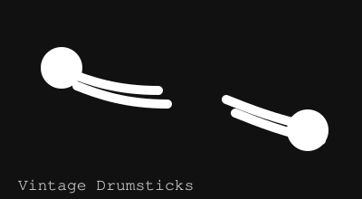

Early 20th Century Hickory Drumsticks
Asking price: $490
These vintage drumsticks were likely purchased in the early 1900s and remain in very good condition. They were preserved with care, showing a smooth, polished grip and original light patina that reflects their age without compromising usability.
Ideal for collectors of early percussion accessories or musicians who appreciate authentic historic playing tools, these sticks are a rare find from a period when handcrafted wooden sticks were still the norm.
Condition highlights:
- Early 20th century provenance with authentic wear patterns
- Well-preserved hickory wood with no significant cracks
- Comfortable balance and original finish
- Excellent condition for display or light performance use

Illustrated drumsticks rendered as a local site graphic.